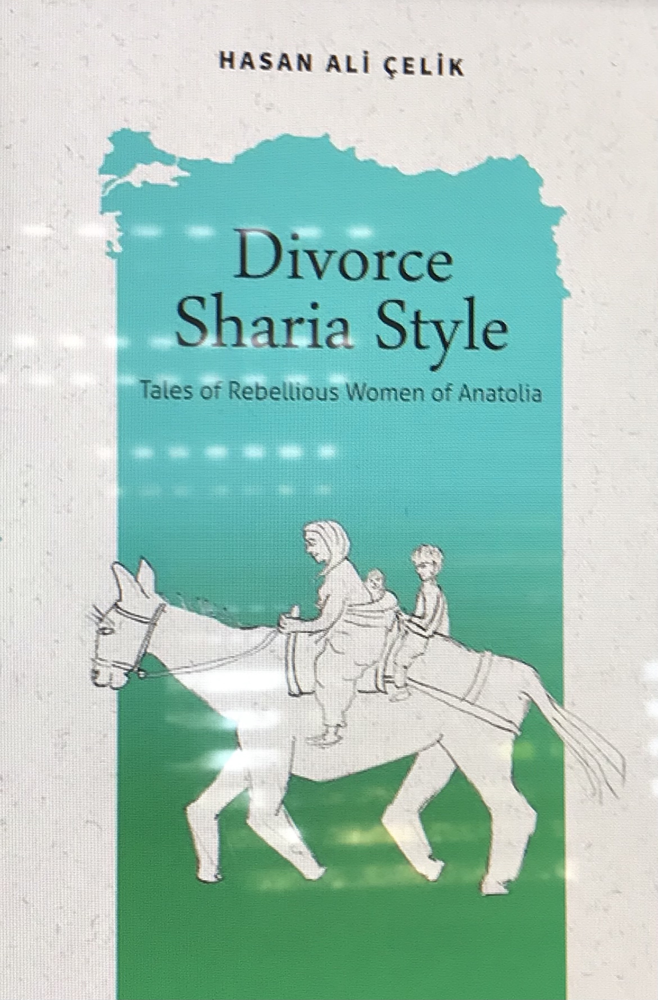

    

Divorce Sharia Sytle - Tales of Rebellious Women of Anatolia

    Divorce Sharia Style is the story of a defiant young girl who grows into a savvy and resourceful
young woman as she bootstraps herself in a world where the customs and laws are stacked against her. 
It is also the story of that young woman’s daughter, grandchildren, and mountain community as their
traditional village life is upended by the transformations of the twentieth century. In Divorce Sharia 
Style, Hasan Ali Çelik reveals a passionate and personal depiction of the resilient and joyful women of
his homeland, and a culture facing obsolescence—that of the village Turks of Central Anatolia.
    These connected stories are by turns hilarious, heartbreaking, and deeply moving. Çelik illuminates 
the unconventional and enterprising paths of his mother and grandmother—whether taking on the “man’s job” 
of tending the grapevines, dancing on the rooftops, or navigating sharia laws to divorce not one but two
faithless husbands—with humor and unflinching candor. Eventually, their efforts would lead to Çelik 
graduating from the University of California with a PhD in mathematics. His stories weave together
to form an inspiring and captivating tapestry of the rebellious women of Anatolia, making their way
through a tangled world, armed only with their wit, audacity, and indomitable spirits.

